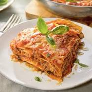

Lasagna recipe

Ingredients
- 9 lasagna noodles
- 1 tablespoon olive oil/li>
- 1 onion, chopped
- 2 garlic cloves, minced
- 1 pound ground beef (or ground turkey for a lighter version)/li>
- 24 ounces marinara sauce
- 15 ounces ricotta cheese
- 1 egg
- 1/2 cup grated Parmesan cheese
- 2 tablespoons chopped fresh parsley
- 2 cups shredded mozzarella cheese
- Salt and pepper to taste
- Preheat Oven and Prepare Noodles: Preheat your oven to 375°F (190°C). Cook lasagna noodles according to package instructions until al dente, drain, and set aside.
- Cook Meat Sauce: In a large skillet, heat olive oil over medium heat. Add onion and garlic, and sauté until soft. Add ground beef, breaking it apart with a spoon, and cook until browned. Drain excess fat. Stir in marinara sauce, bring to a simmer, and cook for 5 minutes. Season with salt and pepper to taste.
- Mix Ricotta Layer: In a bowl, combine ricotta cheese, egg, Parmesan cheese, and parsley. Mix well and season with salt and pepper.
- Assemble Lasagna: Spread a thin layer of meat sauce in the bottom of a 9x13 inch baking dish. Layer three lasagna noodles over the sauce. Spread half of the ricotta mixture over the noodles, followed by a third of the mozzarella cheese, and then a layer of meat sauce. Repeat the layers, ending with a layer of noodles, meat sauce, and the remaining mozzarella cheese on top.
- Bake: